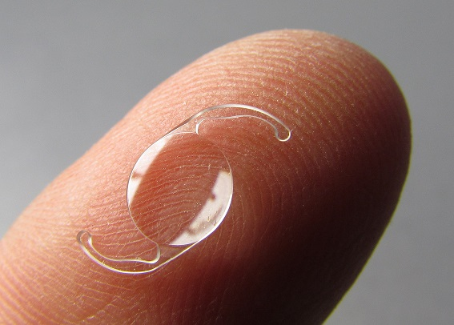

Intraocular lens (IOL) is a lens implanted in the eye as part of a treatment for cataracts or myopia. The most common type of IOL is the pseudophakic IOL. These are implanted during cataract surgery, after the cloudy eye's natural lens (colloquially called a cataract) has been removed. The pseudophakic IOL provides the same light focusing function as the natural crystalline lens. The second type of IOL, more commonly known as a phakic intraocular lens (PIOL), is a lens which is placed over the existing natural lens and is used in refractive surgery to change the eye's optical power as a treatment for myopia (nearsightedness).
IOLs usually consist of a small plastic lens with plastic side struts, called haptics, to hold the lens in place in the capsular bag inside the eye. IOLs were conventionally made of an inflexible material (PMMA), although this has largely been superseded by the use of flexible materials, such as silicone and acrylic glass. Most IOLs fitted today are fixed monofocal lenses matched to distance vision. However, other types are available, such as multifocal IOLs that provide the patient with multiple-focused vision at far and reading distance, and adaptive IOLs that provide the patient with limited visual accommodation.
Surgeons annually implant more than 6 million lenses. The procedure can be done under local anesthesia with the patient awake throughout the operation. The use of a flexible IOL enables the lens to be rolled for insertion into the capsule through a very small incision, thus avoiding the need for stitches. This procedure usually takes less than 30 minutes in the hands of an experienced ophthalmologist. The recovery period is about 2–3 weeks. After surgery, patients should avoid strenuous exercise or anything else that significantly increases blood pressure. They should visit their ophthalmologists regularly for several months to monitor the implants.
IOL implantation carries several risks associated with eye surgeries, such as infection, loosening of the lens, lens rotation, inflammation and nighttime halos, but a systematic review of studies has determined that the procedure is safer than conventional laser eye treatment. Though IOLs enable many patients to have reduced dependence on glasses, most patients still rely on glasses for certain activities, such as reading.